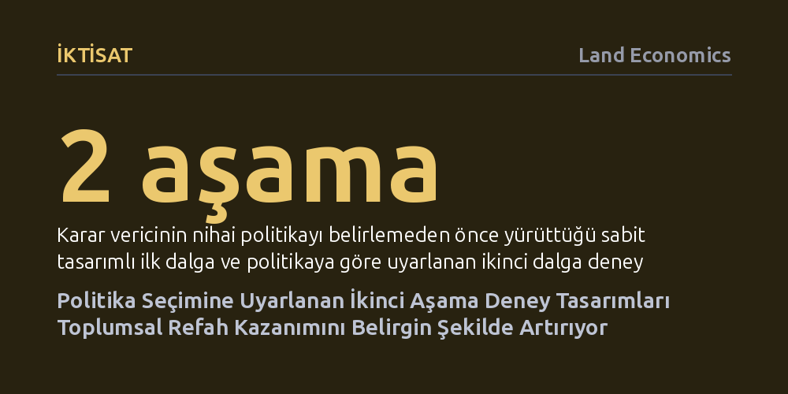

IKTISAT · Land Economics · 2026-09-12
Araştırma, kamu politikası seçiminde refahı azamiye çıkarmak için deneylerin nasıl tasarlanması gerektiğini inceliyor. Yazar, ikinci aşama deneyini doğrudan nihai karara uyarlayan matematiksel bir yöntem geliştirerek refah kazanımlarının belirgin biçimde artırılabileceğini gösteriyor.
Deneylerin yalnızca genel istatistik toplamak için değil, doğrudan uygulanacak kamu politikasının getirisini en üst düzeye çıkarmak üzere hedefe yönelik tasarlanabileceğini gösterir.

Kamu kurumları ve karar vericiler, bütçe kısıtları altında topluma en yüksek faydayı sağlayacak politikaları seçmek istediklerinde sıklıkla saha deneylerine başvururlar. Örneğin bir sosyal yardım programında ailelere ne kadar nakit desteği verilmesi gerektiği başlangıçta kesin olarak bilinemez. Geleneksel deney tasarımları çoğunlukla bir müdahalenin ortalama etkisini mümkün olan en genel biçimde tahmin etmeye odaklanır.
Fakat sahadaki uygulayıcının asıl amacı yalnızca istatistiksel bir parametreyi kestirmek değil, eldeki kısıtlı kaynaklarla toplumsal refahı azamiye çıkaracak en doğru politikayı belirlemektir. Deneyin kendisi bu nihai amaca göre planlanmadığında, karar anında en çok ihtiyaç duyulan kritik eşiklere dair veriler eksik kalabilir. Bu eksiklik de kamu kaynaklarının verimsiz kullanılmasına ve toplumun elde edebileceği faydanın düşmesine yol açar.
İncelenen senaryoda karar vericinin elinde ilk aşamada sabit bir tasarımla toplanmış ön veriler bulunmaktadır. Asıl zorluk, nihai politika kararı verilmeden önce toplanacak ikinci aşama deneyin nasıl tasarlanacağıdır. İkinci aşamanın tasarımını nihai politika tercihiyle eş zamanlı olarak eniyilemek, matematiksel olarak çok yüksek boyutlu bir dinamik programlama problemine dönüşür ve sonlu örneklemlerde tam bir çözüme ulaşmak neredeyse imkânsızdır.
Araştırma, bu hesaplama darboğazını aşmak için örneklemin büyüdüğü varsayımına dayanan 'limit deneyi' yaklaşımını öneriyor. Sürekli müdahalelerin yer aldığı uyarlanabilir deneyler için yeni bir asimptotik temsil teoremi geliştiren çalışma, karmaşık problemi pratikte çözülebilir bir yaklaşıma dönüştürüyor ve bu yöntemin teorik olarak en iyi sonucu verdiğini ortaya koyuyor.
Yöntemin etkinliğini somutlaştırmak amacıyla araştırmacı, eğitim veya sağlık şartına bağlı nakit desteği programlarına ilişkin ampirik deney verilerini inceliyor. Bu senaryoda karar verici, sınırlı bir kamu bütçesiyle ailelere verilecek nakit transferi miktarını ve destek kapsamını belirlemeye çalışıyor.
Sonuçlar, ikinci aşama deney tasarımının doğrudan nihai politika tercihine odaklanacak şekilde uyarlanmasının rastgele veya standart tasarımlara kıyasla çok daha yüksek refah kazanımı sağlama potansiyeli taşıdığını gösteriyor. Deney, parametrenin tüm değerlerini aynı hassasiyetle ölçmek yerine, kararın yönünü değiştirecek kritik politika sınırlarına odaklandığında kaynaklar çok daha verimli kullanılıyor.
Elde edilen bulgular, kamu politikası araştırmacılarının deney kurgulama biçimini değiştirebilecek bir bakış açısı sunuyor. Her gruba veya müdahaleye eşit kaynak ayıran statik deneyler yerine, ilk aşamada öğrenilen bilgileri kullanarak nihai hedefe kilitlenen çok aşamalı deneyler, kamuya hem zaman hem de bütçe tasarrufu sağlıyor.
Bununla birlikte çalışmanın henüz hakem değerlendirmesinden geçmediğini ve yöntemin büyük örneklem varsayımlarına dayanan yaklaşık bir çözüm olduğunu göz önünde bulundurmak gerekiyor. Gelecekte farklı kamu politikası alanlarında yapılacak saha uygulamaları, bu matematiksel modelin pratik hayattaki başarısını daha net biçimde test edecektir.